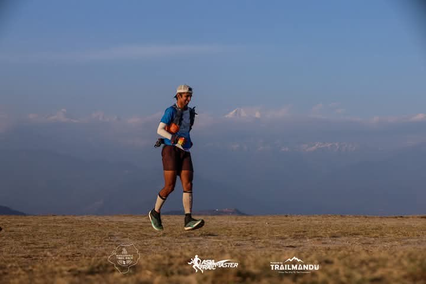

After years of competing in high-altitude races and training elite athletes in the Himalayas, Shashwat recognized a significant gap in specialized altitude training for trail runners looking to improve their performance.
Most runners lack access to proper high-altitude training environments and the technical knowledge needed to adapt and excel in these challenging conditions.
This bootcamp was born from Shashwat's desire to share his expertise and the incredible terrain of Lahaul to help runners achieve breakthroughs in their performance while building a stronger trail running community in India.